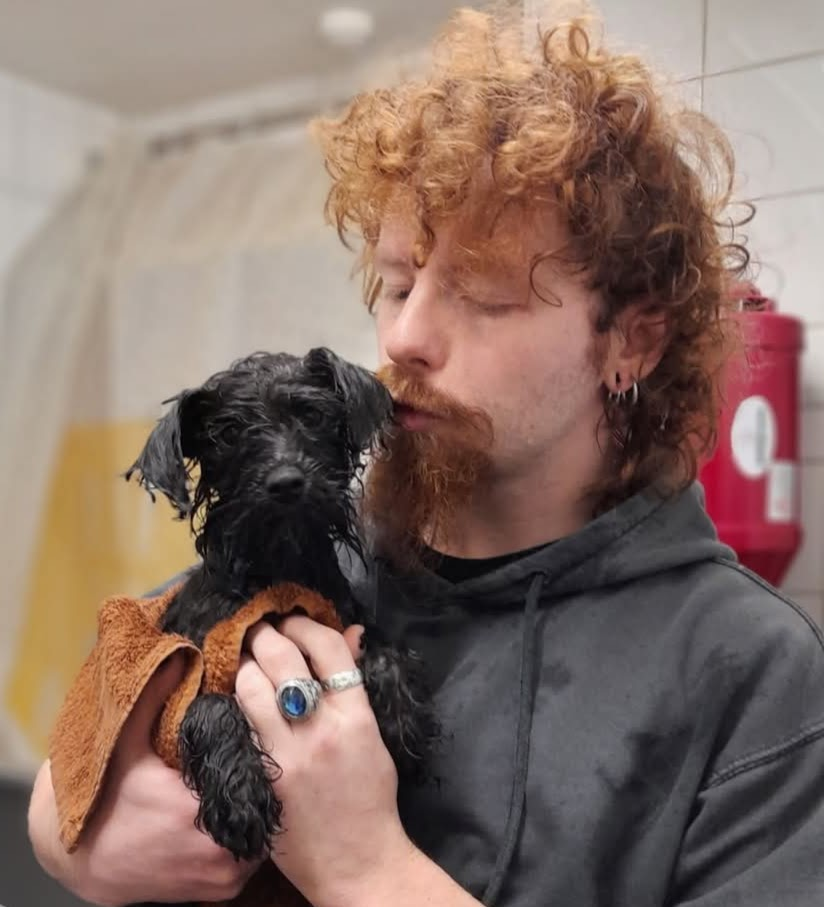

My name is Leon Campbell. I offer dog grooming services in Lisburn including pickup and drop offs. I am a fully insured, certified professional groomer that is also trained in pet CPR and first aid. I operate on a one-to-one basis meaning that I only work with one dog at a time. I have over 2 years experience with dog grooming and so have learned many styles and cultivated some of my own. Here at Spellbound Styles "Humanity before Vanity" is at the core of my work ethic which means the wellbeing of your dog is my number one priority. If there is intense matting it is more ethical and effective to be shaved out, and minimises irritation. If I see no improvement in a dog's behaviour despite training efforts on mine and the owner's part I may suggest you try elsewhere- some dogs do not like a specific gender, people with hats or hoods up, busy places, etc.
